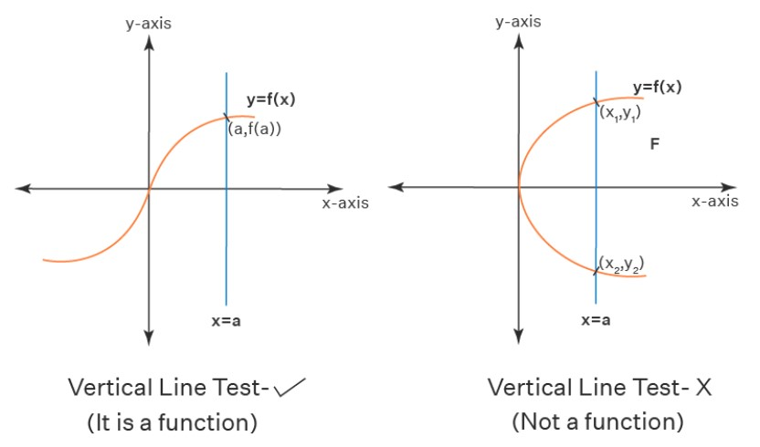
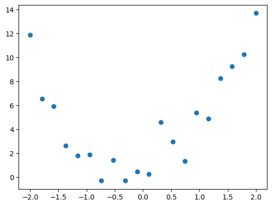
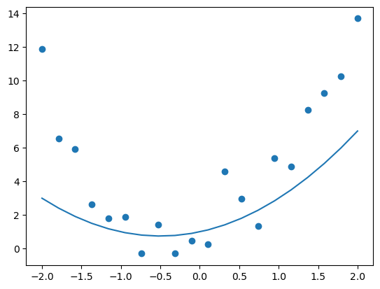
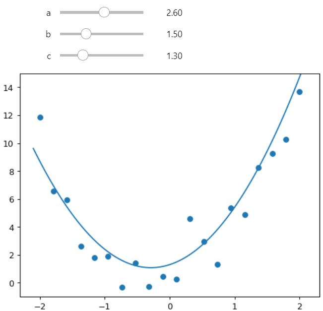
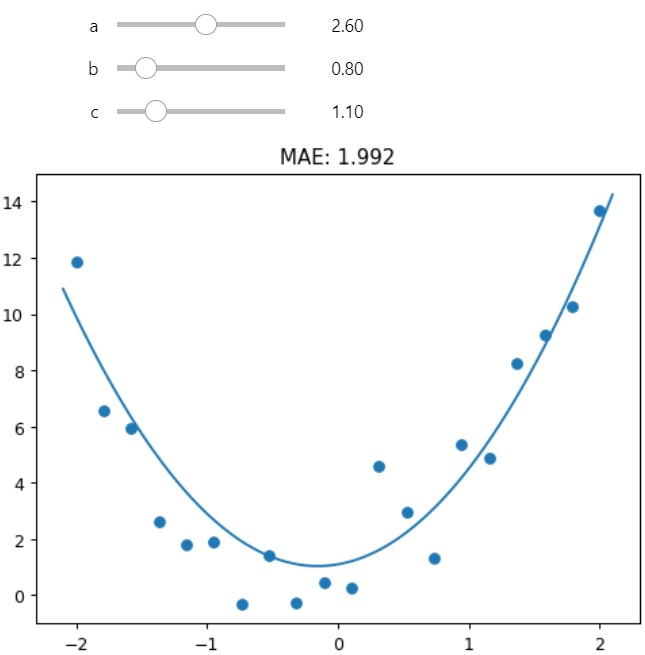

from ipywidgets import interact
from fastai.basics import *
import pandas as pdA neural network is a mathematical function. So what’s that?
A function is a mapping or transformation where each unique set of inputs is equal to exactly one output.
In highschool, the Vertical Line Test was used to determine whether a line was a function.

This post will go through basics of how to fit a line to some data.
1. Import Libraries
2. Upload and Plot Data
df = pd.read_csv("upload_dataset.csv")
df.head()| x | y | |
|---|---|---|
| 0 | -2.000000 | 11.869037 |
| 1 | -1.789474 | 6.543284 |
| 2 | -1.578947 | 5.939607 |
| 3 | -1.368421 | 2.630370 |
| 4 | -1.157895 | 1.794741 |
plt.scatter(df.x, df.y)
3. Quadratic Equation
3.1 General Quadratic Equation
def gen_quad_fn(a,b,c,x): return a*x**2 + b*x + c3.2 Custom Quadratric Equation
def custom_quad_fn(a,b,c): return partial(gen_quad_fn,a,b,c)3.3 Creating \(1x^2 + 1x + 1\)
quad_111 = custom_quad_fn(1,1,1)3.4 Plotting \(1x^2 + 1x + 1\)
xs_111 = df.x
ys_111 = quad_111(xs_111)
plt.plot(xs_111,ys_111)
plt.scatter(df.x, df.y)
3.4 Interactive Quadratic Equation
The coefficients a, b and c of the Quadratic Function can be adjusted which in turn changes the shape of the line.
[Future Iteration]: Figure out how to embed this adjustable plot into quarto blog
plt.rc('figure', dpi=90)
@interact(a=(0,5,0.1),b=(0,5,0.1),c=(0,5,0.1))
def interactive_plot(a,b,c):
# 1. plot scatter
plt.scatter(df.x, df.y)
# 2. create xs_interact
xs_interact = torch.linspace(-2.1,2.1,100)
# 3. plot custom_quad_interactive
plt.ylim(-1,15)
plt.plot(xs_interact, custom_quad_fn(a,b,c)(xs_interact))
3.5 Mean Absolute Errors (MAE)
By calculating a Loss Function such as Mean Absolute Errors, we can numerically determine what is the ‘best’ fit of our line to the data.
Sure it isn’t entirely scientific to adjust it manually but its a good starting point.
def mae(prediction, actual): return np.mean(abs(prediction-actual))plt.rc('figure', dpi=90)
@interact(a=(0,5,0.1),b=(0,5,0.1),c=(0,5,0.1))
def interactive_plot2(a,b,c):
# 1. plot scatter
plt.scatter(df.x, df.y)
# 2 create custom_quad_interactive_fn
# 2.1 create xs_interact
xs_interact = torch.linspace(-2.1,2.1,100)
# 3. create ys_interact
plt.ylim(-1,15)
ys_interact = custom_quad_fn(a,b,c)(xs_interact)
# 4. calc mae
y_actual = df.y
y_predicted = custom_quad_fn(a,b,c)(df.x)
interact_mae = round(mae(y_actual, y_predicted),3)
# 5. plot
plt.plot(xs_interact, ys_interact)
plt.title(f"MAE: {interact_mae}")
To be Continued…
The next section go through a more automated method to find the smallest MAE.
Neural Network Basics: Part 1
Neural Network Basics: Part 2
Neural Network Basics: Part 3